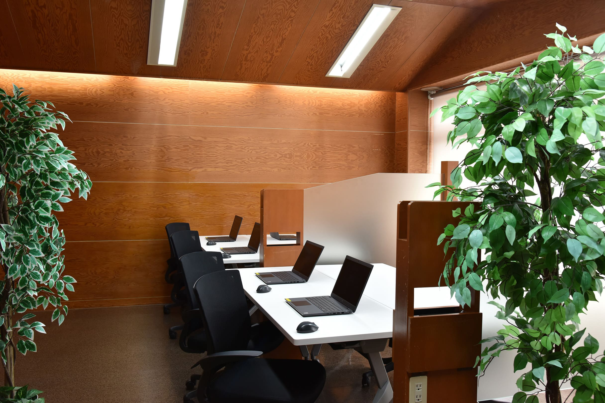

雇用契約を結んで働く
事業所と雇用契約を結び、労働関係法令の適用を受けながら働きます。
就労継続支援A型事業所 ユーリード福住
札幌の『ユーリード福住』は、「ただ就職すること」だけを最終的なゴールにせず、「就職した後も自分らしく、長く安心して働き続けられること」を目指しています。
見学・相談する
「過去の職場で人間関係につまずいてしまった」
「自分に何が向いているか分からない」
「働きながら実践的なスキルを磨きたい」…
そんな不安や目標を抱える方にこそ、
ぜひ来ていただきたい場所です。
「できることを増やし、やりたいことを仕事につなげる」を合言葉に、地下鉄東豊線「福住駅1番出口」から徒歩4分、バスターミナルからも近い通いやすい環境で、あなたのペースに寄り添い、新しい一歩を全力で応援します。2023年8月にオープンした当事業所は、ゆとりのある広い空間で、一人ひとりが余裕を持ってお仕事ができるところが自慢です。
事業所と雇用契約を結び、労働関係法令の適用を受けながら働きます。
雇用契約に基づき、勤務時間や仕事内容に応じたお給料を受け取ります。
一人ひとりの状況に合わせ、支援員と相談しながら仕事を続けます。
実務経験を積みながら、安定した就労の継続や一般就労も視野に入れます。
IT・Web・EC運営・事務・軽作業など、実際の業務を通して仕事に必要な力を身につけます。
・PC作業：データ入力、ライティング、プログラミング等の事務・専門スキル。
・デザイン・Web制作：ホームページ制作、動画編集、SNS運用、デザイン全般。
・最新技術の習得：話題のAIを活用した業務など、幅広いスキルを磨けます。
・ネットオークション出品代行：商品の清掃、検品、商品画像の撮影、商品の発送など。
・飲食：接客、調理補助、洗い物など。体を動かして働きたい方におすすめです。
毎月の個別面談では就職に向けた課題だけでなく、「日々の業務や職場環境のこと」「これからの人生のこと」など何でも相談できる環境を整えています。また、毎月の個別面談だけではなく、状況に応じていつでも「相談や面談」に対応させていただきます。
「何が向いているのか」「どんな働き方をしたいか」を、ご本人の意思を大切にしながら一緒に整理します。 決められた作業を無理に押し付けることは決してありません。周囲のペースと比べるのではなく、 あなた自身の成長や日々の変化をしっかりと見つめながら、最適なゴールを探していく安心の支援体制です。 あなたの“やりたい”をカタチにし、夢を実現するお手伝いをさせていただきます。
近年の就職者数は2024年度5名、2025年度3名、2026年度は8月現在で3名と確かな実績を誇ります。 一般就労移行率44.6％、半年定着率60％というリアルで誠実な数字は、私たちが「とりあえず就職させる」のではなく、 ご本人と企業との長期的マッチングを重視している証拠です。 実務スキルはもちろん、ストレスコントロールや体調管理など、 長く働き続けるための土台作りを徹底的にサポートします。
「一人で全て完璧にこなさなきゃ」と抱え込む必要はありません。 当事業所では、できないことをお互いに補い合う「チームマネジメント」の考え方を大切にしています。 日々の作業を通じ、利用者さん同士のコミュニケーションも活発です。 人との適切な距離感や、困った時に「助けて」と言える発信力を安全な環境で実践的に学べるため、 これが就職後の高い定着率に繋がっています。
9:30〜15:00の勤務を想定した一例です。体調や担当業務により内容を調整します。午前・午後に各10分のリフレッシュ休憩があり、どちらも勤務時間として扱われるため、休憩中もお給料が支払われます。
その日の体調と予定を確認し、担当する仕事を整理します。
PC業務やEC運営、軽作業など、担当する仕事に取り組みます。
仕事の合間にひと息つき、気持ちと体を整えます。
仕事から離れて休憩し、午後の業務に備えます。
職員へ相談しながら、午前の続きや仕上げ、確認作業を進めます。
午後の後半に向けてひと息つき、無理なく業務を続けられるよう整えます。
進み具合を共有し、作業環境を整えて一日の業務を終えます。
■こんな方に強くおすすめします！
初めての方にも安心して進めていただけるよう、見学・体験から面接、受給者証の申請、利用開始までの流れをご案内します。
電話やお問い合わせフォームからご連絡ください。事業所を見学し、希望する方は仕事を体験しながら、雰囲気や仕事内容が自分に合うかを確認します。
お住まいの地域を管轄するハローワークで求職登録を行い、ユーリード福住の求人へ応募するための紹介状を受け取ります。
見学や体験の感想を伺いながら、希望する仕事内容や勤務時間、必要な配慮について確認します。不安なことも面接時にご相談いただけます。
お住まいの区の福祉担当窓口で、障害福祉サービス受給者証の交付を申請します。サービス等利用計画の作成を含め、必要な手続きを進めます。
採用と受給者証の交付後、勤務条件を確認して雇用契約を結びます。職員と仕事の進め方を確認しながら利用を開始します。
知りたいことを、ひとつずつ。
利用を考え始めた方から寄せられることの多い疑問をまとめました。
一般企業等で働くことが難しい障害のある方のうち、支援を受けながら雇用契約に基づいて継続して働くことが可能な方を対象とする福祉サービスです。 雇用契約を結んだ方には労働関係法令が適用され、賃金が支払われます。
一般企業等での就労が難しく、雇用契約に基づく継続的な就労が可能な障害のある方が基本的な対象です。 年齢や現在の状況なども含め、詳しくは自治体の障害福祉窓口や相談支援事業所へご確認ください。
見学や相談だけでも、もちろん大丈夫です。
こちらから申し込みください。
見学・相談のお問い合わせ
Webデザイン・アプリ制作、データ入力・事務作業、名刺・チラシ・Webなどのデザイン、ネットオークション出品代行を行っています。詳しい業務内容は、見学や体験の際にもご案内します。
自治体への利用申請や事業所の面接などがあるため、期間は1人ひとり異なります。サイト内の流れは一般的な目安としてご覧ください。
明るく落ち着いたワークスペースで、PC業務や軽作業に集中できる環境を整えます。
